CRONACHE & DADI
CRONACHE & DADI
[ONE-SHOT FOLK HORROR RURALE]
🎧 Accendi l'atmosfera...
Non c'è allegria nel fuoco, solo un tepore malsano che odora di stoppie bruciate e pelo di cane bagnato. Gli abitanti indossano pesanti mantelli di lana grezza e maschere rituali intagliate nel legno, modellate con fattezze animalesche e vuoti grotteschi al posto degli occhi; le indossano non per festeggiare, ma per confondere gli spiriti della terra e celare l'uno lo sguardo dell'altro. Con un passo lento, i loro corpi si perdono nella nebbia, mentre litanie antiche continue guidano il loro cammino fin dove Ella brama il sacrificio, scelti con la brama di chi segue credenze senza senso, malvagie.
Vecchioforte è un borgo fortificato, stretto attorno a una torre di pietra grezza risalente a secoli prima e ormai inglobata da stalle e abitazioni fatiscenti. Ciò che rende questo borgo un pericolo mortale non sono solo le sue leggi arcaiche, ma ciò che si cela sotto il suolo. Nelle profonde vene sotterranee che scorrono sotto le radici dei boschi, le energie arcane locali sono state corrotte. La terra stessa si sta cibando di "sangue malato", una putrefazione magica che avvelena i raccolti, fa impazzire il bestiame e alimenta un culto sotterraneo dedito a pratiche oscure e dimenticate.
Molti anni fa, i fondatori di Vecchioforte non si insediarono lì per caso: scelsero quella conca perché vi sorgeva un antico sepolcro preistorico, un luogo in cui una faglia di energia magica primordiale intersecava il mondo sotterraneo. Con il passare dei secoli, la memoria del sito originale è svanita, trasformandosi in una vaga superstizione legata alla fertilità della terra.
Sei mesi fa, tuttavia, la situazione è precipitata in modo irreversibile. Una studiosa di nome Beatrice, bloccata da mesi a Vecchioforte a causa di una violenta bufera di neve, era arrivata a scoprire che in quel luogo si celava il mitico Codex Sanguis Tace (Il Libro del Sangue Silente), il grimorio di un antico culto di streghe capace di estrarre ricchezza e fertilità dalla terra attraverso sacrifici. Le sue ricerche non sono passate inosservate. Vico Malavasi, il capovillaggio, si è interessato fin troppo arrivando ad aiutarla nel recupero del tomo, per poi tradirla: l'ha depredata e rinchiusa nella cantina della taverna per sfruttare la sua conoscenza, essendo l'unica in grado di tradurre i passaggi più complessi del libro. Da allora, Vico Malavasi e una cerchia ristretta di complici hanno iniziato a praticare riti di sangue per garantire prosperità al villaggio. Il villaggio è ora diviso: la maggior parte degli abitanti è terrorizzata, ma complice per istinto di sopravvivenza, mentre i congiurati gestiscono i riti nel profondo.
I personaggi non si conoscono tra loro. Ognuno di essi, operando in regioni o contesti differenti, ha ricevuto separatamente una missiva sigillata con cera nera, recapitata in modi inspiegabili (lasciata sotto la porta di una taverna, trovata tra i libri di studio o consegnata da un corriere muto). La lettera proviene dal Sigillo Nero, la massima autorità operativa della Sezione Speciale di Vigilanza Arcana - "Il Concilio dei Confini" - un dipartimento ombra incaricato di studiare i flussi della magia e, in caso questi vengano alterati, sdradicare le forze oscure.
La chiamata non giunge mai alla luce del giorno. Arriva avvolta nel silenzio, recapitata da un messaggero muto che svanisce prima dell'alba, lasciata sotto una porta socchiusa, infilata tra le pagine di un vecchio registro o trovata sul tavolo al risveglio.
La lettera è un foglio di pergamena grezza e ripiegata, sigillata da una pesante colata di ceralacca nera priva di alcuno stemma. Sulla superficie esterna, un'incisione runica avverte chi la riceve: il sigillo richiede un tributo di sangue per aprirsi.
Non appena ciascuno di voi sfiora la ceralacca nera con una goccia del proprio sangue, il sigillo si scioglie e si consuma all'istante, tingendo l'intera pergamena di un nero corvino profondo. Subito dopo, dal buio del foglio affiorano parole tracciate con un inchiostro luminoso che assomiglia a sottili fili d'oro, come se la scrittura si stesse cucendo da sola sulla carta:
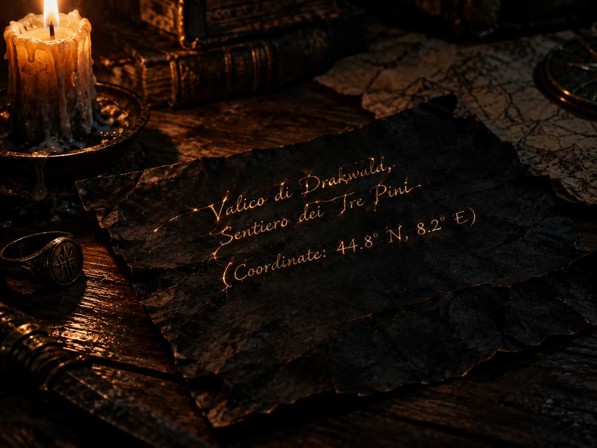
"La chiamata del silenzio"
“Valico di Drakwald, Sentiero dei Tre Pini (Coordinate: 44.8° N, 8.2° E)“
Appena la lettura viene completata e il messaggio viene assorbito dalla mente, la pergamena perde consistenza, sgretolandosi e riducendosi in un mucchietto di polvere nera impalpabile, simile alla grafite di una matita, che scivola via tra le dita senza lasciare alcuna traccia.
Consegna segretamente a ciascun giocatore (o estrai a sorte) una delle seguenti frasi. Ognuna funge da controrisposta ufficiale da pronunciare quando giungeranno nel posto indicato e incontreranno il contatto (Sigillo Nero).
Mentre ci si mette in marcia sotto mentite spoglie, ciascuno affronta l'isolamento della strada a modo proprio: c'è chi avanza con cinico e disilluso pragmatismo, chi con algida e metodica attenzione, e chi custodisce una cupa determinazione dietro una facciata di assoluta normalità.
Il viaggio è aspro, segnato da sentieri fangosi e da una nebbia che gela il respiro. I giorni si susseguono in solitudine fino alla notte stabilita.
Fuori, il buio è totale e il freddo morde la carne. Secondo le istruzioni cifrate, ognuno di voi converge in un luogo isolato e fuori dalle mappe: una profonda caverna naturale che funge da avamposto sotterraneo controllato dal Concilio dei Confini. L'aria all'interno è ferma, odorante di pietra bagnata e muschio. È qui, in questo antro buio e anonimo, che i vostri cammini si incrociano per la prima volta. Non conoscete i vostri veri nomi né i vostri volti nascosti dai cappucci.
Il buio nella caverna è assoluto, spezzato solo dal lento stillicidio dell'acqua e dal respiro teso degli agenti che si scrutano senza potersi vedere. Improvvisamente, un passo felpato ma pesante rompe il silenzio. Non c'è rumore di ferraglia, solo il fruscio di una pesante veste di cuoio scuro che stride contro la roccia. Dall'ombra più profonda della grotta, dove la luce non arriva, una figura si materializza in piedi davanti a loro.
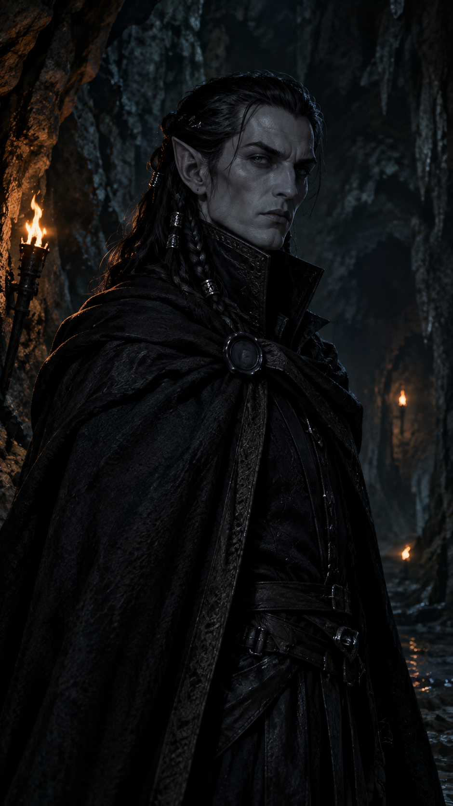
Ha tratti aristocratici e taglienti, la pelle color cenere e occhi freddi come il ghiaccio che fissano ciascuno di loro con distaccata superiorità. Un lungo mantello scuro avvolge le sue spalle, fermato al petto da un sigillo di ceralacca nera. È "Sigillo Nero", il "Cancelliere dei Confini Spezzati". Non un semplice messaggero, ma la mente che muove i fili nell'ombra. Solleva una mano guantata per stroncare sul nascere qualsiasi sussurro o movimento, e con una voce bassa, tagliente e priva di qualsiasi emozione, rompe il ghiaccio:
“Qual è il vostro patto col silenzio?“
A turno, uscendo dall'oscurità o facendosi avanti nella penombra della caverna, i personaggi rispondono recitando la controrisposta esatta che ciascuno di loro ha ricevuto dal Narratore.
“Bene. Siete nel posto giusto. Ora ascoltate con attenzione ciò che vi attende oltre questa grotta. Non brancolerete nel buio senza sapere cosa muove questa piaga...“
“Vecchioforte non è un villaggio nato per caso. Secoli fa, i suoi fondatori scelsero quella conca isolata perché vi sorgeva un antico sepolcro preistorico, un nodo in cui una vena di energia magica primordiale interseca il mondo sotterraneo. Con il passare del tempo, la memoria di quel sepolcro è svanita, dimenticata dai locali e ridotta a una vaga superstizione sulla fertilità della terra.“
Il suo sguardo freddo scruta i volti in ascolto prima di proseguire:
“Le nostre sonde geomantiche registrano anomalie in questa conca da quasi tre mesi, ma l'attività è accelerata solo di recente. Quelle specifiche vene magiche hanno iniziato a comportarsi in modo diverso da tutte le altre nella regione: vi abbiamo registrato piccole, impercettibili tracce di magia oscura. Qualcosa sta alterando la linfa sotterranea.“
Sigillo Nero si stringe nel mantello, l'espressione immobile nella sua severità:
“La conferma è arrivata pochi giorni fa, quando i nostri esploratori hanno recuperato la carcassa di un animale appena fuori dai confini di Vecchioforte. Una comune pecora, morta in modo anomalo: aveva una zampa in più e fauci piene di denti simili a quelli di una tigre. La corruzione è già iniziata.
Non sappiamo ancora chi o cosa stia alimentando questo marciume. Il vostro compito è infiltrarvi nel villaggio e individuare la sorgente esatta della corruzione prima che possa intaccare il benessere e la stabilità delle nostre terre.
Agite nell'ombra, osservate tutto e spegnete l'infezione alla radice.“
Conclude con un cenno secco del capo:
“Ricordate le regole: isolamento, discrezione, nessuna pietà e nessuna traccia. Adesso muovetevi.“
La figura di Sigillo Nero si allontana, dirigendosi verso l'uscita della caverna e lentamente si dissolve davanti ai vostri occhi, lasciando nell'antro solo l'eco gelida delle sue parole. L'incontro è terminato. A uno a uno, lasciate la caverna. Il sentiero che sale si arrampica tra rocce aguzze e banchi di nebbia densa, sferzato da un vento tagliente che sa di neve e legna bruciata.
Dopo ore di marcia estenuante, superata una curva stretta tra pareti di pietra grigia, la valle si apre improvvisamente davanti ai vostri occhi. Il profilo cupo e arroccato di Vecchioforte emerge dal bianco della neve e dal fumo grigio dei tetti, apparendo come una macchia ostile e isolata dal resto del mondo. Il tempo dell'attesa è finito.
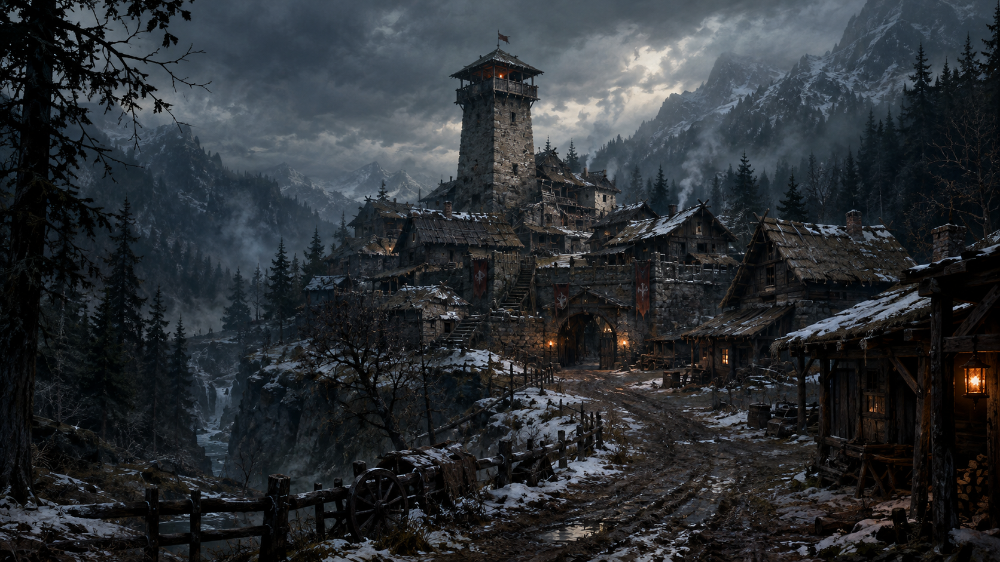
"Vecchioforte"
Il borgo si presenta come un insediamento fortificato di stampo alpino e rurale, stretto attorno a una torre di guardia centrale. Un muro di cinta in pietra grezza, consumato dal tempo e segnato da stendardi logori color porpora scuro, cinge l'abitato principale. Dalle case in legno e pietra si alza un fumo denso e acre, alimentato da legna umida e paglia bruciata, che si mescola a una nebbia bassa e gelida.
Subito fuori dalle mura, la strada principale è un solco di fango rappreso e neve sporca, costellato da baracche, cataste di legna e ruderi di stalle dove le poche luci delle lanterne a olio proiettano ombre lunghe e tremolanti. Più in basso, sulla sinistra, scorre un torrente scuro e semighiacciato, le cui sponde fangose emanano un vapore sottile e malsano. Intorno al villaggio, i boschi di conifere si stringono minacciosi, con sagome di alberi spogli che sembrano sorvegliare ogni movimento.
Attorno al perimetro si distinguono chiaramente tre possibili vie d'accesso. L'ingresso principale è sormontato da un massiccio portone in legno ferrato, incastonato in un arco di pietra e sorvegliato da una postazione rialzata. Più in basso, seminascosto dalla nebbia fluviale, lungo il letto del torrente non ricoperto completamente dalle acque, si intravede una piccola scala di pietra e legno – vecchia e in gran parte distrutta dalle intemperie – si inerpica lungo la parete rocciosa, offrendo una via di risalita che sbuca direttamente nei vicoli del borgo. Infine, lungo il fianco orientale, un sentiero secondario che passa accanto alle stalle, fino a convergere a una porta protetta da una robusta palizzata in legno ferrato.
Fermati qui. Lascia spazio ai giocatori: osserva come decidono di studiare il perimetro, quale rotta scelgono di intraprendere e quale piano mettono in atto per superare le barriere ed entrare a Vecchioforte.
Porta del Villaggio
Se uno o più personaggi si presentano apertamente davanti al cancello, due guardie locali armate di picche e pesanti mantelli di pelliccia bloccano il passaggio. Ispezioneranno tutti e chiederanno:
“Chi siete? Cosa volete a Vecchioforte in piena stagione di gelo? Qui non c'è lavoro, non c'è cibo per gli estranei e nessuno passa dopo il tramonto. Qual è il vostro affare?“
Richiede una prova di Persuasione o Inganno (Media - CD 13) o una copertura eccellente per non essere rispediti indietro.
Scala di legno e pietra
Uno o più personaggi scendono nel fango gelido e s'infiltrano attraverso il torrente fangoso per arrampicarsi lungo la scala, evitando del tutto i controlli delle guardie ai cancelli. La scala è pericolante e instabile; un passo falso o un rumore di troppo nel tentativo di aggrapparsi ai gradini di pietra rotti può far scivolare il personaggio nel torrente ghiacciato o produrre rumore. È richiesta una prova di Agilità (Media - CD 13). Una volta arrivati in cima la scala sbuca direttamente in un vicolo cieco e disabitato all'interno del borgo.
Accesso dalle stalle
È pesantemente sbarrato da un grosso catenaccio e sorvegliato da una guardiola in legno in cui stazionano almeno una o due guardie. Per passare da qui bisogna o corrompere la sentinella con qualcosa di prezioso, o fingere di essere mercanti o carrettieri, superando una verifica severa. Se si tenta di forzarlo o di scavalcare la palizzata, il rumore del legno o l'eventuale attivazione di campanacci di allarme attira immediatamente i cani da guardia chiusi nelle stalle vicine e la guarnigione della guardiola, facendo scattare l'intero allarme del settore occidentale.
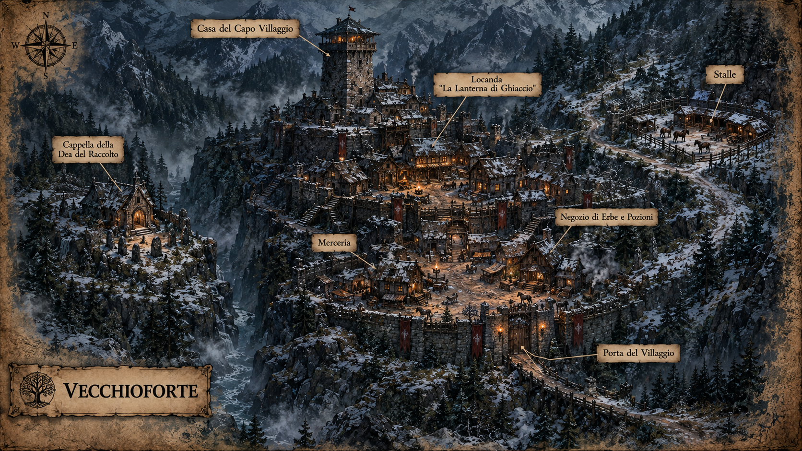
"Mappa Vecchioforte"
Qualunque sia la via scelta per superare le barriere — che si tratti di aver superato l'esame delle guardie al portone principale, di aver forzato la pusterla delle merci o di essere sgusciati su per la scala di pietra sbreccata lungo il torrente — vi ritrovate all'interno del borgo.
L'aria è densa di un fumo acre e nerastro che si alza dai comignoli delle case in legno e pietra, alimentato da legna umida e paglia bruciata. Il freddo è pungente, ma ciò che colpisce di più è l'atmosfera: un silenzio pesante, rotto solo dal calpestio sordo degli stivali sul fango e dal mormorio dei residenti. Il villaggio si sviluppa come una conca stretta e fangosa, dominata dall'alto dalla torre. Nelle strade strette e tortuose si muovono figure avvolte in pesanti mantelli di lana grezza e pellicce logore. Intorno alle poche cataste di legna e ai ruderi, la vita scorre con un ritmo ossessivo e guardingo: alcuni contadini trainano carri carichi di sacchi logori e fascine, mentre altri tagliano tronchi, lanciando sguardi carichi di diffidenza a ogni ombra che si muove. Non ci sono sorrisi, non ci sono saluti; solo occhi che scrutano i forestieri da sotto i cappucci.
Tra le baracche e le strutture più solide del borgo, poco prima che la strada inizi a inerpicarsi verso la torre, un'insegna di legno marcio dondola cigolando nel vento gelido. È la taverna del paese, "La Lanterna di Ghiaccio". Dalle sue finestre sbarrate e dai vetri spessi e opachi filtra una luce giallognola e tremolante, accompagnata dal brusio ovattato di poche voci e dall'odore inconfondibile di birra di scarsa qualità.
Il tempo a Vecchioforte scorre inesorabile. Per mantenere alta la tensione e spingere i giocatori a fare scelte strategiche, puoi limitare le loro risorse di tempo: stabilisci un numero massimo di luoghi che il gruppo può visitare. Non appena i personaggi lasceranno l'ultimo luogo consentito, la pesante campana del borgo rintoccherà cupamente, segnando l'immediata chiusura di ogni attività e l'inizio del coprifuoco.
La pesante porta di legno della taverna si apre, lasciando entrare una folata di vento gelido e neve prima di richiudersi alle vostre spalle. Il contrasto con l'esterno è immediato: l'aria all'interno è densa, satura dell'odore acre di stufato di cavolo e pellicce bagnate che fumano vicino al grande focolare centrale.
Appena varcate la soglia, il brusio di fondo si affievolisce di colpo. Dieci paia di occhi si volgono verso di voi. Nei ristretti spazi della sala, la distinzione è netta: ci sono pochi forestieri o mercanti di passaggio, seduti agli angoli più bui con gli sguardi bassi e i bagagli stretti tra le gambe, e poi ci sono i cittadini di Vecchioforte.
Gli sguardi con cui i locali vi fissano sono un misto di gelida diffidenza e inquietante indifferenza.
Dietro il bancone in legno tarlato si muove con passo lento Feola, un'anziana donna dalla corporatura robusta e lo sguardo segnato da decenni di inverni spietati, le mani rugose intente a pulire un boccale con uno straccio lercio. Al suo fianco, a fare la spola tra i tavoli con un vassoio di zuppa fumante, c'è Muriel, una giovane ragazza. Lei vi accoglie subito con un sorriso smagliante, un gesto di cortesia quasi innaturale in quel posto dimenticato dagli dei.
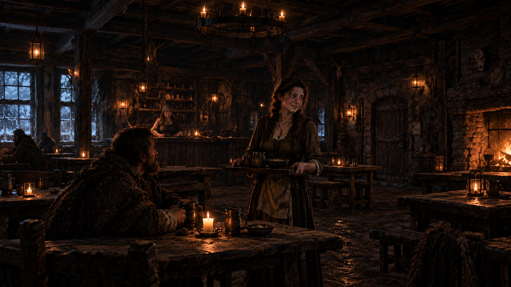
«Lanterna di Ghiaccio«
Lascia che i giocatori decidano come muoversi. Ecco i punti di interesse:
Il registro degli avventori
Esaminando il bancone o il registro delle presenze quando Feola è distratta, con una prova di Investigazione (Difficile - CD 16), i personaggi notano che negli ultimi mesi la rotazione dei mercanti forestieri è crollata del 70%, ma i pagamenti delle tasse locali registrano entrate anomale in beni di lusso o pellicce di pregio. Qualcuno sta depredando i viaggiatori di passaggio.
Le scorte di cibo e l'acqua contaminata
Se i personaggi esaminano la brocca di vino o il cibo servito, con una prova di Percezione (Difficile - CD 16), notano che il vino sa marcatamente di rame, e che le verdure nella zuppa hanno una consistenza fibrosa.
Un avventore abituale
Sedendosi al suo tavolo con circospezione, senza fare domande dirette, ma dimostrando di conoscere la durezza delle rotte commerciali della zona, magari accompagnando il tutto con un sorso di alcol forte (Prova di Costituzione - Difficile CD 15).
“Io vengo a Vecchioforte due volte l'anno da oltre un decennio, ma vi giuro che negli ultimi tempi questo posto è diventato una tomba a cielo aperto. Anni fa si poteva commerciare liberamente, la gente parlava e le botteghe erano vive. Oggi no. C'è un silenzio malsano che fa gelare il sangue. E vi do un consiglio da amico: se vi mettete a fare troppe domande o a ficcare il naso dove non vi compete, gli sgherri del capovillaggio vi metteranno i bastoni tra le ruote in un battito di ciglia... e di forestiosi che chiedevano troppo prima di svanire nel nulla nel cuore della notte ne ho già visti troppi, credetemi“
Il racconto di Muriel
E una giovane ragazza, la cameriera della taverna, ma fa parte della cerchia ristretta di Vico Malavisi che ha iniziato a praticare i riti di sangue.
Il suo movente è disperato: crede ciecamente che i sacrifici servano a placare le entità oscure e ottenere la guarigione della sua sorellina malata. Non si mostrerà
ostile verso i personaggi, al contrario, sarà disponibile e pronta a parlare. Il suo obietto è spingere i personaggi a indagare. Con la scusa di aprirsi per paura, racconterà la
storiella fingendo di cercare aiuto ma, invece, li metterà sulla strada verso le grinfie del culto:
“Voi non capite... qui nessuno è al sicuro. Qualche tempo fa, dopo il tramonto, sono dovuta uscire di nascosto dalla taverna per correre dall'erborista del villaggio a prendere alcune foglie particolari che mi servivano... per mia sorella, per darle un po' di sollievo dai suoi dolori. Sapevo perfettamente di aver violato il coprifuoco, e la paura era tanta. Poi ho sentito dei passi pesanti e delle voci alterate lungo la via, e mi sono rapidamente nascosta dietro a delle grandi casse di legno accatastate contro un muro. Poco più avanti, un anziano allevatore del posto, Geumenio, stava inveendo a voce alta contro le guardie del villaggio. Era disperato, si lamentava che tutti i suoi animali stavano morendo, colpiti da mali inspiegabili, e protestava rumorosamente rifiutandosi di sottostare alle imposizioni del capovillaggio.“
Muriel abbassa la voce, stringendo i lembi del grembiule tra le dita tremanti, mentre i suoi occhi cercano quelli dei personaggi con urgenza:
“Prima che l'uomo potesse continuare, da un vicolo buio sono sbucate due figure avvolte in pesanti mantelli, con indosso inquietanti maschere in legno. Non c'è stata una vera colluttazione: con un solo cenno silenzioso, le due figure mascherate hanno pronunciato poche parole incomprensibili, una cantilena gutturale che ha immediatamente paralizzato e calmato l'anziano, svuotandogli completamente lo sguardo. Senza quasi opporre resistenza, quell'uomo si è lasciato condurre via nel buio, ed è svanito nel silenzio della notte... e io sono rimasta lì, nascosta, senza fiatare, tremando al solo pensiero che potessero accorgersi di me.“
Parlare con Feola
Tacita collaboratrice del capo villaggio. Non fa domande, non vuole problemi. Fa ciò che gli dice Vico fino a quando gli permetterà di tenere la taverna senza pagare alcun tributo.
Non spreca parole con i forestieri. Non offre confidenze, non risponde alle domande sulla politica del villaggio e si limita a imporre le regole fredde della taverna con sguardi di pietra:
La cantina
Dietro una pesante porta di legno rinforzata, tra botti di vino acido e umidità, è incatenata una donna: indossa abiti logori, che un tempo dovevano essere preziosi, il suo viso è gonfio, pieno di lividi; i polsi sono consumati dalle catene che li stringono mentre le gambe giacciono inermi in una pozza di sangue secco. Quando scendete, vi fissa con un sorriso amaro, mostrando alcuni denti mancanti.
“Non so più da quanto tempo sono qui, ricordo solo che una notte la bufera di neve mi bloccò in questo maledetto villaggio... e fu la mia rovina. Nel cercare frammenti di storia dimenticata, avevo capito che qui sotto giaceva il "Codex Sanguis Tace", l'antico grimorio perduto di un dimenticato culto di streghe capace di piegare la terra per estrarre ricchezza e fertilità attraverso il sangue. E lo trovai... dimenticato in una cappella fuori dal borgo, dall'altro lato del fiume...
In un momento di cieca debolezza, forse per una dannata infatuazione, mi fidai di Vico Malavasi. Gli confessai cosa trovato. Lui mi ha derubata, mi ha sbattuta in queste catene e mi ha lasciata a marcire.
Non mi ha uccisa solo per una ragione: il suo stupido ego e la sua ignoranza non bastano a decifrare le pagine del Codex. Ha avuto bisogno di me per tradurre i passaggi del rito, per capire come gestire la vena magica che sta avvelenando i pozzi anziché far fiorire i campi. E io... ho provato a resistere, ma le torture sono diventate troppo crudeli...“
I personaggi notano che il corpo della donna è pieno di bruciature, lividi, tagli infetti... piccole deformità che quasi sembrano respirare sotto le vesti.
“Io... io non ho più tempo, e nemmeno voglio averlo! Il mio corpo e la mia mente sono stati contaminati dal veleno, non mi resta molto come potete vedere... Ma voi avete ancora del tempo: stanotte era la scadenza ultima, la notte in cui il cerchio doveva chiudersi per restituire il libro al culto originario prima che la terra rigetti ogni cosa. Uscite di qui, andate alla Cappella e fermateli prima che l'intera valle venga risucchiata dal marciume e dalla tirannia del culto delle streghe. Dovete prendere quel libro e distruggerlo con la vostra fede!“
Gli occhi della donna si socchiudono sempre di più, lasciando spazio a lacrime che sembrano quasi cullarla nel suo ultimo viaggio. Le sue ferite sono troppo gravi, ma la cosa peggiore è che alcune parti del suo corpo sono in uno stato avanzato di necrosi. Il suo respiro si fa sempre più debole e lento fino a spegnersi...
Spingendo la porta di legno della merceria, un campanellino arrugginito emette un rintocco secco che rimbomba nello spazio angusto. L'aria è densa di odore di lana grezza, candele e muffa. A passo lento, scandito dal colpo ritmico di un bastone sul pavimento di legno scricchiolante, si avvicina un'anziana donna. Un sorriso sdentato apre il suo volto solcato dalle rughe e il suo occhio sinistro completamente vitreo e immobile. Sulle scaffalature intorno a lei, i fili di cotone e gli abiti sono logori, rattoppati alla bell'e meglio, mentre pellicce di animale impolverate riposano in cesti di vimini accanto a scarpe sdrucite.
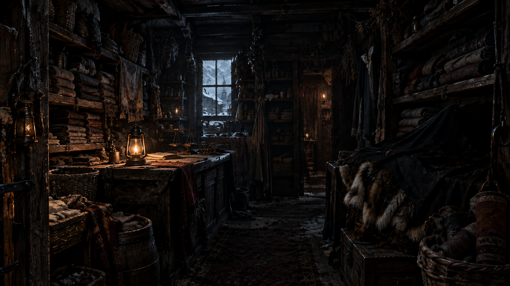
«Il Filo di Adelaide«
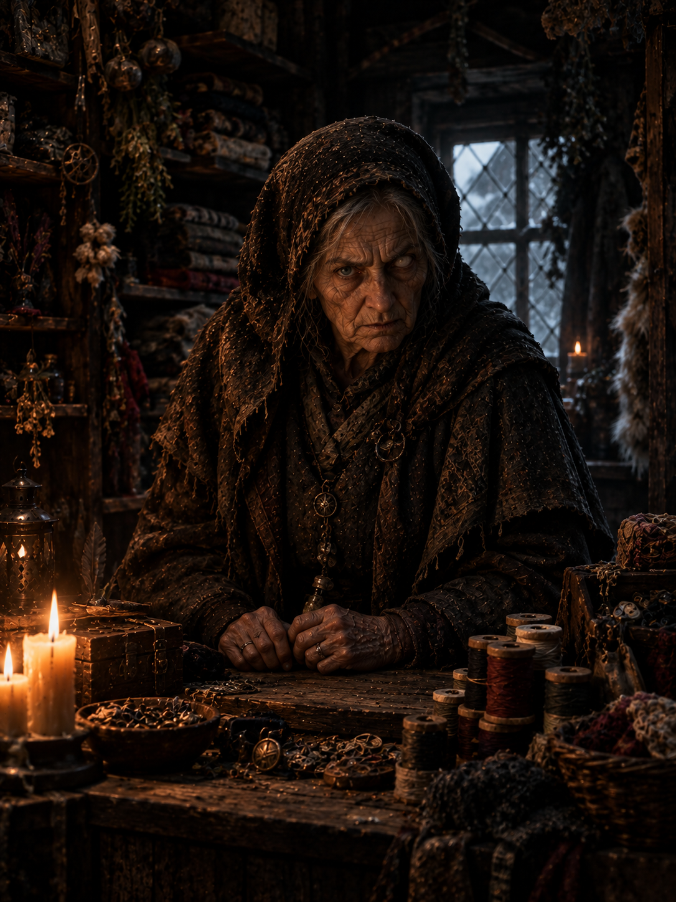
La venditrice, Adelaide, è del tutto estranea ai culti oscuri e ai rituali del villaggio. Non sa nulla dei sacrifici o della vera natura di ciò che accade a Vecchioforte. Il suo compito è semplice: riceve gli abiti, gli effetti personali e le mercanzie appartenuti ai viaggiatori sfortunati o ai mercanti scomparsi, li ripara, li rattoppa e si occupa di consegnarli alla casa del capovillaggio. Una parte di questi beni viene riadattata e distribuita agli abitanti del borgo.
Acquistare o frugare tra gli oggetti
Possono cercare vestiti da viaggio resistenti, pezzi di ricambio o materiali di scarto utili per camuffarsi o rattoppare equipaggiamento.
Investigare sulla merce
Se i personaggi esaminano i prodotti, con una prova di Percezione o Investigazione (Difficile - CD 16), noteranno che in un angolo nascosto, coperto da un panno nero, si trovano rotoli di stoffe finissime e abiti di fattura cittadina, recando ancora il marchio di sartoria di una grande città.
Interrogare Adelaide
Se i personaggi affrontano la donna riguardo a queste merci di dubbia provenienza, Adelaide negherà tutto terrorizzata, brandendo il suo bastone o minacciando di chiamare le guardie, mormorando spaventata:
“Le cose dei viandanti che non lasciano il paese vengono redistribuite per ordine della torre... io eseguo solo gli ordini, non faccio domande!“
L'insegna di legno fuori reca l'effige di una radice secca. All'interno, il locale è caldissimo, saturo di vapori densi e di un acre odore di erbe bruciate. Su un pesante tavolo di legno massello, un giovane uomo è totalmente assorto nel pestare vigorosamente delle erbe dentro un mortaio di pietra. Senza nemmeno alzare lo sguardo verso la porta, inveirà quasi contro di loro con un tono seccato:
“Sono quasi pronto! Datemi il tempo di ultimare le ultime cose!“
Solo un istante dopo, voltandosi e accorgendosi che i forestieri non sono del paese, il suo atteggiamento muta di colpo: un sorriso largo e smagliante illumina il suo volto:
“Oh, che maleducato! Mi presento, Edigeo Malavasi, e questa è la mia bottega. Ditemi, come posso aiutarvi?“
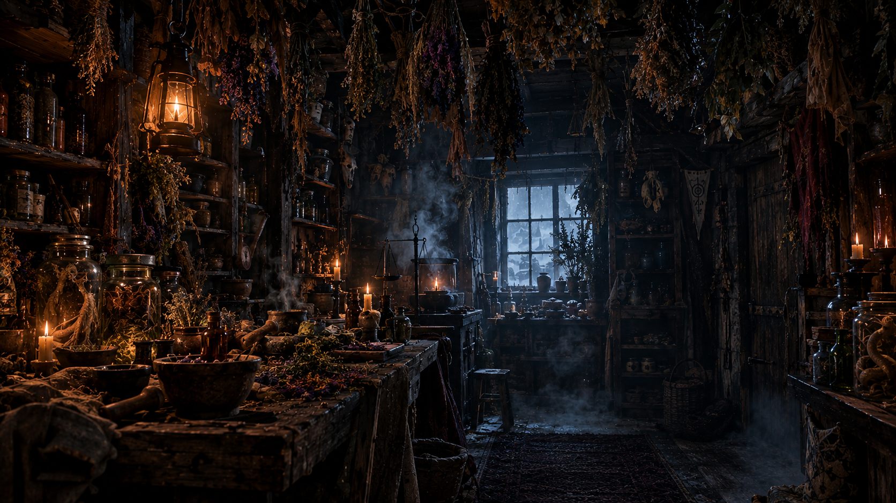
«La Bottega dei Rimedi Amari«
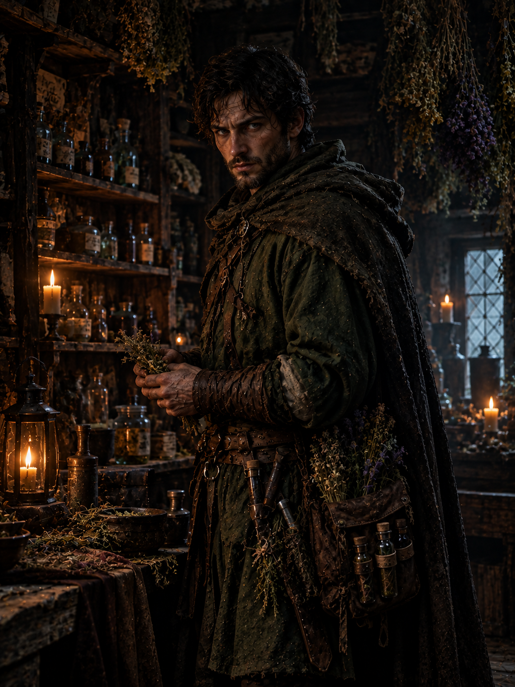
Edigeo è un venditore nato: estremamente affabile, servizievole e con la battuta pronta. Tuttavia, sotto questa patina di cortesia cittadina cova un fondo di nervosismo e irritabilità che affiora non appena viene messo in discussione ciò che dice o fa. È un fedele esecutore delle direttive del capovillaggio — di cui è anche cugino —, sebbene si sforzi in tutti i modi di apparire come un rispettabile e innocuo bottegaio che cerca di aiutare i cittadini come meglio può. Si occupa della preparazione degli intrurgli narcotici che vengono distribuiti nella taverna, nelle bevande che vengono portate ai viaggiatori e mercanti che arrivando al borgo.
Investigare sulla merce
Con una prova di Intelligenza o Medicina (Media - CD 13), i personaggi riconoscono che le erbe pestate non servono a curare, bensì a indurre uno stato di forte sedazione e torpore muscolare.
Oltrepassando il grande portone di legno massiccio delle stalle di Vecchioforte, un'ondata densa di freddo umido, acre odore di letame e putrefazione vi accoglie, facendovi stringere gli occhi nell'oscurità. L'interno è appena graffiato dalla luce un'unica lanterna a olio appesa a una trave maestra, che proietta ombre lunghe e danzanti sulle pareti di pietra. I recinti per i cavalli e il bestiame si susseguono per la gran parte vuoti, silenziosi e coperti da uno strato sottile di brina notturna; pochissimi gli animali rimasti. Accasciato su una sedia di legno sbilenca, piazzata proprio fuori dall'ingresso principale, un uomo è crollato in un sonno così profondo e alcolico da far dondolare pesantemente la testa in avanti, con una bottiglia mezza vuota ancora stretta tra le dita intirizzite e un russare rauco che spezza il silenzio. Più in fondo, addentrandosi tra le corsie dei box, la situazione non cambia: rannicchiato su una branda di paglia maleodorante e umida, un palafreniere locale dorme avvolto in un mantello consunto, respirando affannosamente e bofonchiando frasi indecifrabili nel suo torpore febbrile.
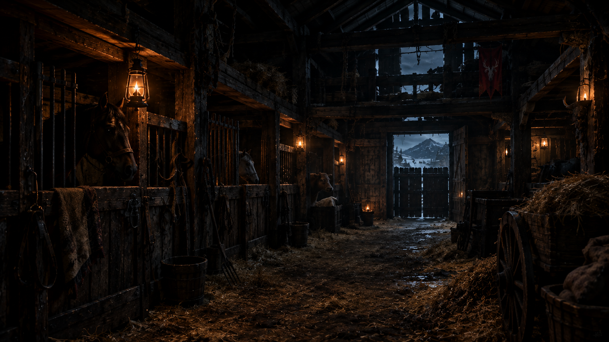
«Le stalle di Vecchioforte«
Il guardiano
L'uomo accasciato sulla sedia fuori dalla porta principale è un vecchio guardiano locale ubriacato a fondo per chiudere un occhio.
Se i personaggi tentano di perquisirlo, con una prova riuscita di Furtività o Rapidità di mano (Facile - CD 11)
troveranno una chiave di ferro arrugginita (che apre il lucchetto del deposito sella o l'uscita secondaria) e un piccolo sacchetto
con poche monete di rame sporche di fango.
Il palafreniere
Rannicchiato sui covoni di paglia più all'interno c'è un giovane palafreniere che vive nel terrore. È caduto in un torpore febbrile e parnoico,
indotto da ciò che ha visto nei giorni scorsi. Se i personaggi riescono a svegliarlo con delicatezza o a interrogarlo dopo averlo calmato
con una prova di Persuasione o Intimidazione (Facile - CD 10), balbetterà che "quelli del culto" passano la notte,
muovendosi con quelle strane maschere di legno e costringendolo a bere sidro pesante per farlo dormire. Sotto il suo mantello stringe
disperatamente un amuleto di ferro freddo a forma di mezzaluna spezzata, un cimelio di famiglia.
Le tracce
In un angolo buio adibito a deposito sella, rovistando tra vecchi finimenti impolverati, con una prova di Percezione (Media - CD 13), i personaggi Trovano un sacco di juta contenente residui di
foraggio annerito e mescolato a erbe narcotiche pesanti, l'inconfondibile intruglio usato per stordire le bestie e renderle inoffensive prima di un trasporto furtivo;
accanto ad esso, cinghie di cuoio rinforzate e una fiasca di canfora dal forte odore balsamico.
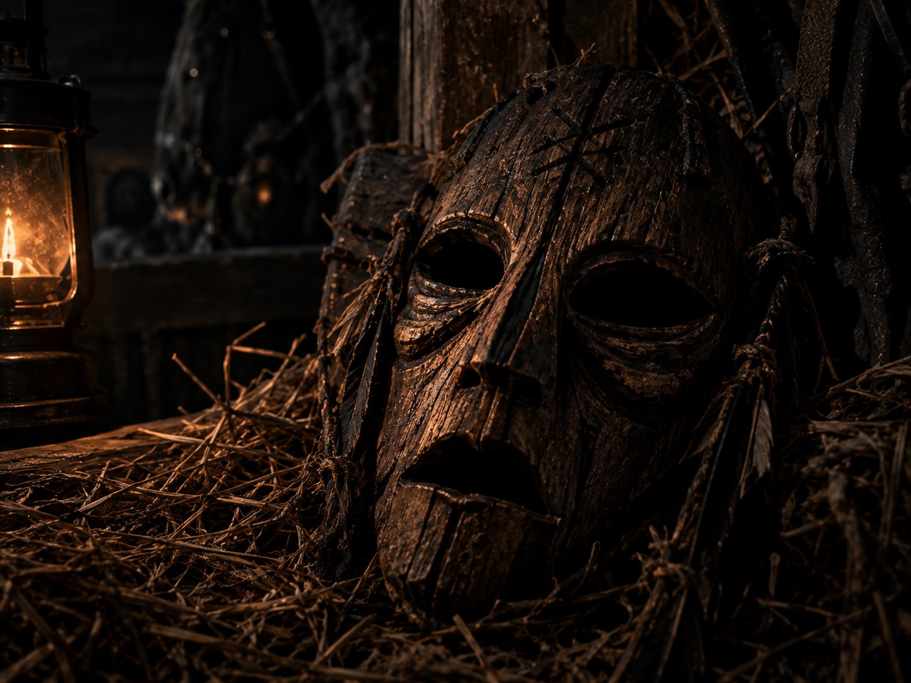
La maschera di legno
Nascosta nel fondo di una mangiatoia vuota, sotto uno strato di fango e pula, i personaggi rinvengono la maschera di legno grezzo intagliata
con le sembianze di una bestia cornuta, chiaro simbolo del culto locale che officia i riti nella vecchia cappella.
Il carretto
Uscendo dall'ingresso secondario, i personaggi noteranno che la scia di sangue si interrompe improvvisamente in uno spiazzo di terra battuta.
Tuttavia, esaminando il terreno circostante, emergono inequivocabili e fresche impronte di ruote larghe e pesanti di un carretto,
affiancate da impronte di stivali fangosi. Seguendo i solchi profondi lasciati dal carretto pesante fuori dalla stalla, la pista fangosa
non lascia scampo: si dirige inequivocabilmente fuori dal perimetro del villaggio, serpeggiando lungo il sentiero in salita che conduce
dritto verso la vecchia cappella isolata, dove il rito sacrificale sta per compiersi.
La residenza di Vico Malavasi si erge pesante e minacciosa sulla roccia più alta del villaggio, una fortezza con mura di pietra e feritoie strette al posto delle finestre. La porta d'ingresso è un massiccio portone di rovere ferrato, sbarrato da pesanti catene e sorvegliato a vista da guardie immobili come statue. Tuttavia, osservando la facciata con attenzione, notate una finestra stretta e priva di vetri che si apre in alto, sulla parete laterale: da lì filtra una debole luce tremolante di candela.
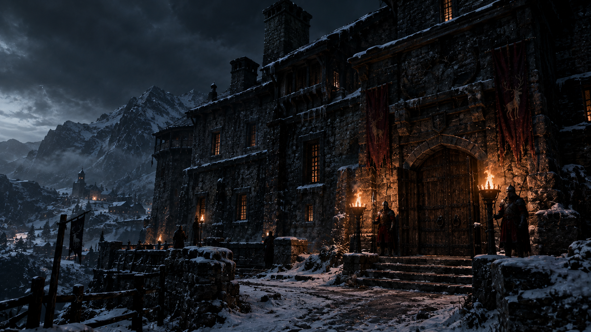
«Casa del Capovillaggio«
Questa zona è blindata. La residenza è un ostacolo quasi insormontabile. Il capovillaggio è alla cappella, ma ha lasciato la sua residenza sotto la sorveglianza feroce di guardie d'onore implacabili. Se i personaggi riescono ad accedere all'edificio, saranno accolti da una ventina di servitori armati e guardie scelte rimaste di guardia.
Se i personaggi decidono di tentare l'accesso arrampicandosi verso la finestra in alto, dovranno superare una prova di Atletica o Furtività (Difficile - CD 16), per evitare di scivolare, di attirare l'attenzione delle guardie. Si ritroveranno in quello che sembra uno studio:
Varcata la stretta apertura, vi ritrovate in un ambiente angusto ma soffocante, saturo dell'odore acre di cera fusa, inchiostro e vecchia carta marcita. Al centro della stanza troneggia una pesante scrivania di legno massello, rischiarata solo dalla luce tremolante di una candela quasi consumata. Intorno, alte cataste di registri rilegati in cuoio e pergamene arrotolate occupano ogni superficie calpestabile, mentre alle pareti appese nell'ombra si notano mappe geografiche consunte e vecchi ritratti di famiglia.
Il decreto di fondazione del culto
Negli archivi privati di Vico, accessibili con una prova di Furtività e Investigazione (Difficile - CD 16), un documento rivela che i sacrifici non servono a placare una vera divinità, ma a mantenere in vita un patto di sangue secolare per garantire la fertilità dei terreni.
I registri dei tributi
Un libro mastro rilegato in cuoio mostra l'elenco completo di tutti i mercanti e viaggiatori "schedati" fin dal loro arrivo a Vecchioforte, con annotate le date dei prossimi sacrifici programmati e i ruoli assegnati a ciascun cittadino complice, inclusi l'erborista Edigeo Malavasi, la cameriera della taverna Feola e la sarta Adelaide.
La mappa delle catacombe
Una pianta dettagliata dei sotterranei sotto la Cappella della Dea del Raccolto mostra la vera camera del rituale, accessibile tramite una particolare leva, un calice incastonato sull'altare, va ruotato seguendo l'ordine ciclico delle stagioni, ma invertendone il senso: dalla morte alla (ri)nascita.
Il suono pesante e solenne della campana del borgo rintocca dietro le vostre spalle, risuonando cupamente tra i vicoli ormai deserti e le botteghe che sbarrano le porte in fretta. Qualsiasi cosa abbiate scoperto o cercato in questo villaggio di ombre, il tempo è scaduto. Il coprifuoco è calato.
Mentre vi guardate intorno, una piccola sagoma sbuca all'improvviso da un vicolo buio. È una bambina del villaggio, con il volto mezzo nascosto da un cappuccio di lana ruvida e un paio di occhi enormi e sgranati che vi fissano fissi. Senza dire una sola parola, vi fa cenno di fare silenzio portandosi un dito alle labbra, vi afferra appena per il lembo della veste e vi fa segno di seguirla con urgenza, mormorando un sussurro strozzato:
“Presto... venite, vi nascondo io prima che le guardie vi vedano...“
Seguendola a rapidi passi tra i muri di pietra fredda, vi conducete fuori dal centro abitato, lasciandovi alle spalle le ultime case buie di Vecchioforte, mentre il vento ulula tra le pietre della collina.
Di fronte a voi si erge infine la sagoma cupa della Cappella della Dea del Raccolto: una struttura isolata di pietra grezza, sormontata dalla torre campanaria che taglia il cielo plumbeo. La pesante porta d'ingresso in legno è socchiusa, e da una fessura filtra una luce verdastra e malata.
La bambina sparisce nell'ombra, lasciandovi soli sulla soglia. Varcando l'ingresso, venite accolti da un silenzio spettrale, interrotto solo dallo scoppiettio sordo delle torce. L'interno è un ammasso opprimente di steli di grano marcio, banchi di legno anneriti e, in fondo alla navata, il grande altare di pietra e legno sovrastato dall'effigie consunta della divinità, coperta di muffe e teschi di animali.
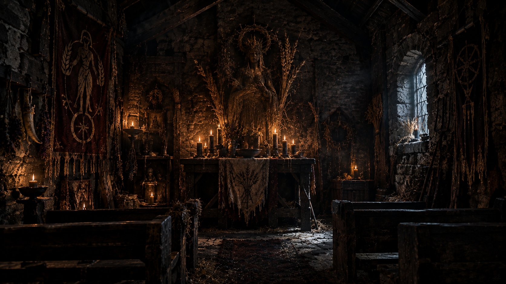
«La Cappella della Dea del Raccolto«
Le incisioni sull'altare
L'altare principale non è un semplice tavolo liturgico, ma il simulacro del ciclo eterno della terra. Esaminando la base dell'altare o l'effigie con una prova di Investigazione o Percezione (Media - CD 13), i personaggi noteranno che un pesante calice di pietra è incastonato nella roccia. Intorno alla sua base, la pietra è finemente incisa con cerchi concentrici e simboli che tracciano il decorso delle stagioni. Per sbloccare il passaggio, il calice va ruotato seguendo l'ordine ciclico delle stagioni, ma invertendone il senso: bisogna far scorrere il meccanismo prima verso il declino e la morte della terra (l'aridità e il freddo dell'inverno), per poi condurlo simbolicamente verso la rinascita e il risveglio della vita (la fioritura e il raccolto). Se la sequenza viene impressa correttamente, l'intero blocco dell'altare scivola, rivelando una ripida e buia scalinata che sprofonda sottoterra.
I resti delle offerte umane
Rovistando tra i mucchi di grano marcio ai piedi dell'altare, un personaggio che superi una prova di Percezione (Media - CD 13) troverà oggetti personali appartenuti a persone scomparse (anelli, ciondoli, pezzi di stoffa pregiata identici a quelli della merceria di Adelaide) intisi di sangue secco.
Scendete lungo la scalinata nascosta sotto l'altare, scavata direttamente nella viva roccia, che sprofonda nel buio più assoluto. L'aria diventa via via più pesante, satura di umidità e di un odore di incenso e carne bruciata. La scala termina in un corridoio basso che si apre improvvisamente in una vasta cripta sotterranea. Al centro di questa grande sala scavata nella terra c'è uno strano cerchio rituale tracciato con ceneri e sangue rappreso, che brilla di una luce opaca e malata.
Al centro del cerchio rituale, illuminato da bracieri di fuoco verdastro, vedete quattro figure incappucciate e con indosso inquietanti maschere di legno, recitando una cantilena gutturale e incomprensibile. Legata al centro del cerchio, con uno sguardo perso e la carnagione malaticcia, c'è la bambina, la stessa piccola misteriosa che vi aveva condotti fin lì all'ora esatta del rintocco delle campane (o che avete raggiunto seguendo la scia di indizi e il carretto, se siete arrivati prima del segnale d'allarme), che sembra riposare beatamente.
I quattro cultisti interrompono all'unisono il loro mormorio e, lentamente, si voltano verso di voi, puntando il legno vuoto delle maschere nella vostra direzione. Senza mai smettere di pronunciare quelle parole, le loro voci si fondono in un unico coro rauco e sovrapposto:
“Ella ha fame... Ella deve essere nutrita. La terra trema, il cerchio si chiude: preparate il vostro sangue per la Dea.“
Un fenomeno innaturale cattura i vostri sguardi: il corpo della bambina si stacca lentamente dalla pietra, sollevandosi da terra senza alcun supporto, e
rimane sospeso a mezz'aria, immobile a circa dieci metri d'altezza, avvolto da un alone di gelido silenzio.
Senza preavviso, le figure brandiscono lame e tizzoni ardenti e si lanciano all'attacco.
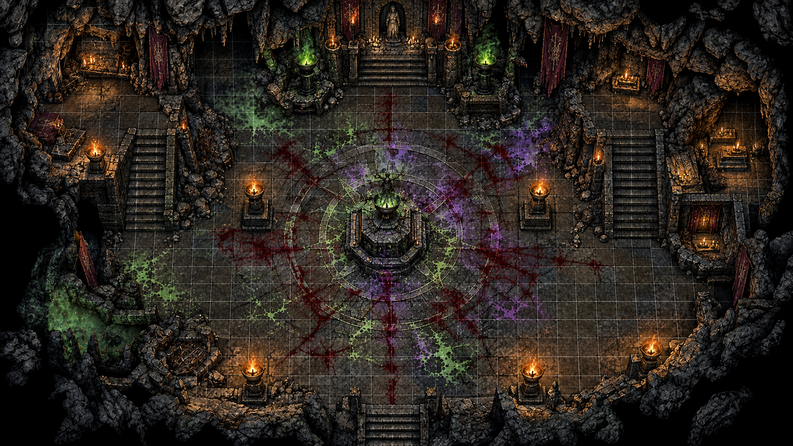
"La Stanza del Sacrificio"
I quattro individui mascherati attorno al cerchio sono i veri motori del culto di Vecchioforte:
SCHEDA PNG: Cultisti (4)
Il fumo verdastro dei bracieri si dirada, lasciando spazio a un'aria densa e stagnante. Nel momento in cui il confronto nella cripta giunge al suo termine, le maschere cerimoniali dei quattro congiurati — Vico Malavisi,
Muriel, Edigeo ed Eugemio — si incrinano all'unisono. Un sottile strato di polvere grigia scivola via dai loro volti scoperti, rivelando le fattezze di chi, fino a un attimo prima, si celava dietro l'ombra del villaggio.
Le vesti rituali pesano a terra come spoglie vuote, mentre la figura immobile della bambina distesa sull'altare subisce un mutamento improvviso: non vi è alcun risveglio, né parole o lamenti. Appena il cerchio di ceneri
perde la sua luce, il piccolo corpo della bambina si dissolve in una leggera nebbia scura, svanendo del tutto e lasciando sull'altare di pietra un grimorio dalle pagine ingiallite e dalla copertina consunta: "Il Codex Sanguis Tace".
Si tratta del testo sacro di un antico culto di streghe dimenticato, un compendio di pratiche blasfeme capace di estrarre ricchezza, raccolti abbondanti e fertilità dalla terra unicamente attraverso la corruzione e il
sacrificio di vite innocenti.
Chiunque posi lo sguardo o le mani su quel volume viene immediatamente pervaso da una sensazione anomala: un legame viscerale e malsano che stringe la mente, rendendo incredibilmente difficile separarsene o gettarlo via.
Un magnetismo oscuro che agisce soprattutto su chi possiede una debole tempra o una naturale inclinazione verso l'ombra, sussurrando promesse di potere a chiunque sia disposto ad ascoltare.
Il villaggio di Vecchioforte rimane così sospeso in un silenzio tombale, custode di segreti che forse non saranno mai del tutto svelati... mentre il seme della tentazione attende solo il prossimo custode.
Questi profili sono concept narrativi agnostici pronti all'uso. Puoi adattarli in pochi minuti al tuo sistema di gioco preferito: servono a velocizzare la composizione della squadra, offrendo archetipi focalizzati sull'atmosfera cupa e investigativa.
★ ASPETTO ★
Un uomo segnato dagli anni e dalle intemperie, con lo sguardo perennemente cupo e le mani callose di chi ha impugnato troppo
spesso le armi. Indossa un pesante cappotto di cuoio consunto dalla pioggia e porta sul volto i segni di vecchi scontri.
Non crede alle coincidenze e odia i culti nell'ombra.
★ ABILITA' ★
Tracciare piste invisibili, fiutare le menzogne, intimidire i testimoni ostili e combattere corpo a corpo quando la situazione degenera.
★ EQUIPAGGIAMENTO ★
Una pesante lanterna a vento protetta da griglie di ferro, un mazzuolo da guerra affaticato
dall'uso e un taccuino di cuoio pieno di appunti su segni eretici.
★ CARATTERISTICHE ★
Assegna valori alti in Forza, Percezione e Intimidazione. Dagli una resistenza naturale ai tiri di volontà legati alla paura.
★ ASPETTO ★
Piccola di statura, incredibilmente rapida nei movimenti e silenziosa come un'ombra. Veste di abiti scuri e che le
permettono di mimetizzarsi tra i boschi e le vecchie tettoie. Ha sempre un orecchio teso ai rumori del mondo e un
sorriso sghembo stampato sul volto.
★ ABILITA' ★
Muoversi senza fare rumore, intrufolarsi ovunque, scassinare serrature rudimentali, scalare pareti e trovare indizi.
★ EQUIPAGGIAMENTO ★
Un set di attrezzi da scasso ricavati da vecchie chiavi modificate, un pungale affilatissimo e una fiasca di liquore forte
★ CARATTERISTICHE ★
Assegna alti valori in Destrezza, Furtività, Rapidità di Mano e Percezione.
★ ASPETTO ★
Indossa una tonaca grigio rovere, ora macchiata di fango e polvere di strada. Ha occhiaie profonde e un
tremore perenne alle dita. Non porta grandi armi, ma la sua presenza ispira una calma fragile, interrotta da mormorii
di preghiere contro i demoni.
★ ABILITA' ★
Curare ferite e intossicazioni, ruiconosce erbe medicinali, identificare simboli sacri o profani e calmare le persone.
★ EQUIPAGGIAMENTO ★
Un borsone in pelle pieno di unguenti, bende e polveri curative, un vecchio testo sacro.
★ CARATTERISTICHE ★
Assegna alti valori in Saggezza, Medicina, Persuasione e resistenza contro gli attacchi mentali.
★ ASPETTO ★
Una figura enigmatica, avvolta in un mantello con cappuccio colmo di tasche interne. Ha le dita perennemente macchiate di tinte
vegetali e di erbe bruciate. Osserva il mondo con distacco clinico, molto cinica e fredda.
★ ABILITA' ★
Riconoscere sostanze, decifrare simboli arcani, distillare preparati.
★ EQUIPAGGIAMENTO ★
Un mortaio di pietra legato alla cintura, provette di vetro, erbe essiccate da fiutare per restare vigile.
★ CARATTERISTICHE ★
Assegna alti valori in Intelligenza, Investigazione, Conoscenza alchimia/natura e resistenza contro le malattie.
Hai completato la lettura di questa one-shot. Vuoi ricevere altre avventure pronte all'uso, risorse esclusive per Master e unirti a un tavolo attivo di creatori e giocatori?
 Discord
Discord
 Ko-Fi
Ko-Fi
 YouTube
YouTube